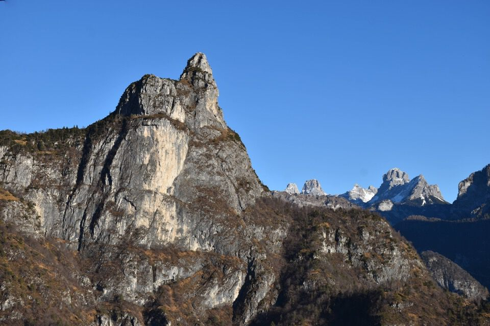

La prima volta nei Monti del Sole: mai dimenticherò quei minuti di irreale tranquillità, spaparanzati al buio sulla Zéngia Longa Alta, sospesi sopra la val Coràie, ad osservare il magnifico cielo stellato dietro i profili delle Stornàde e della Rochéta.
Quella che doveva essere una escursione un po' lunga ma tranquilla si è rivelata una delle più bestiali sfiancate di sempre (troppo ottimista sull'innevamento!): ore passate nella neve affondando fino al ginocchio nell'alta val dei Péz e in ultimo, quando sembrava ormai impensabile proseguire, una disumana corsa contro il tempo immersi nei mughi-misto-neve della cresta est del Mónt Alt.
Meglio così: la prima volta non si scorda mai.
La giornata inizia malissimo: io e Ivan, furbi come volpi, anziché toglierci gli scarponi e guadare a piedi nudi il Cordévole (-5° però!), calziamo dei sacchetti di plastica, peccato che dopo due secondi con orrore inizio a sentire acqua ai piedi! Soffrirò tutta la giornata per questo errore...
Comunque, a parte queste bassezze, ecco l'alba sulla formidabile parete sud-est del Burèl.
Iniziamo a salire per buon sentiero al Col de la Cazèta: tutto già molto bello; è proprio salutare cambiare panorami ogni tanto.
Sempre il Burèl, con forcella Odérz.
Impressionanti le torri dei Pinèi - Sabiói.
Il Còro, con davanti la sentinella della Spirlónga: se sapeste, cari miei corregionali, che cenge che nasconde il Còro!
Comunque, mi piace molto la descrizione che ne dava la compianta Giada: ... le quattro cime a difesa della val Cordévole: le due fortezze Stornàde e Còro, con le due rispettive torri Rochéta e Spirlónga.
Tornando a noi, dal Col dei Pórz la visuale si apre: s'intuisce la "grande Y" mugosa, con la Cima delle Coràie a dx. Per cengia entreremo nella val dei Péz, evidente sulla sx.
Il superbo missile della Rochéta!
Fantastica oltremisura la testata della val Coràie, chiusa dall'austera Cima Bus del Diaol. Perdonate l'entusiasmo, forse esagerato, ma quando si vedono certi posti per la prima volta...!
Sempre la Rochéta che il giorno successivo speravo di salire.
Finalmente sulla Zéngia Longa Alta, un po' impressionante di primo acchito ma in realtà del tutto facile.
Qua un tempo ci passavano con gli animali! Nel vasto altipiano sommitale si trovano ancora i resti degli antichi mandrìz, che purtroppo con la neve non abbiamo visto.
La vista dalla cengia è superba, verso Stornàde e Rochéta.
Eccoci nella solitaria val dei Péz.
Rochéta, Talvéna (innevata) e Còro.
L'ambiente è di una bellezza strepitosa.
Tutte queste mie belle parole corrispondono ben poco allo stato emotivo in cui ci trovavamo: è già da ore che stiamo affondando fino al ginocchio e siamo praticamente allo stremo, oltre ad aver già sforato gli orari prestabiliti.
Ad una certa tiro fuori il cellulare ... vediamo a che quota siamo ... mancano 300 metri di dislivello!!! Praticamente sbianchiamo quando leggiamo la quota, in queste condizioni 300 metri sono come farne 1500, che fare? Propongo la Palàza, che è ben più bassa (ma più mugosa e questo è tutto dire), ma alla fine decidiamo di andare almeno in forcella, quella che si intuisce bene in foto, così da vedere perlomeno il panorama dall'altra parte.

Sbuchiamo in forcella e rimaniamo senza parole davanti all'impressionante parete del Mónt Alt: e chi se lo aspettava?
Comunque alla vista della cresta, benché paurosamente esposta sui baratri della val Salét e ricoperta di mughi, decidiamo di provarci, attratti da quei pochi lembi d'erba senza neve.

Iniziamo una folle corsa contro il tempo tuffandoci dentro i mughi: non so quali forze ma, alla fine, benché ad un orario indecente, ce l'abbiamo fatta.
Notare l'abisso impressionante della val Salét: eppure si sale anche da lì...

Qualche attimo di respiro è concesso: qui il Pelmo con le superbe cime dei Tàmer Davanti e Tàmer Grande.
Il Zélo che a me piace tanto e che vorrei salire da sud.
Dai che siamo fuori dal mare di mughi!
Jenny arriva per prima in cima.
Finalmente in cima dopo un numero di ore vergognoso.
Spettacolo unico, con la Cima delle Coràie, detta anche Croda Bianca per motivi evidenti...

Stornàde, montagna che mi affascina moltissimo.
Cima Bus del Diaol.
Iniziamo a scendere che è tardissimo.

La Schiara.
Pinèi - Sabiói - Tirón.
Tornerò nei MdS: altroché se tornerò!
***

(Disegno di Rudolf Reschreiter. Hans Wödl, Das Biegengebirge im Hauptzuge der Karnischen Alpen, DOËV 1901)